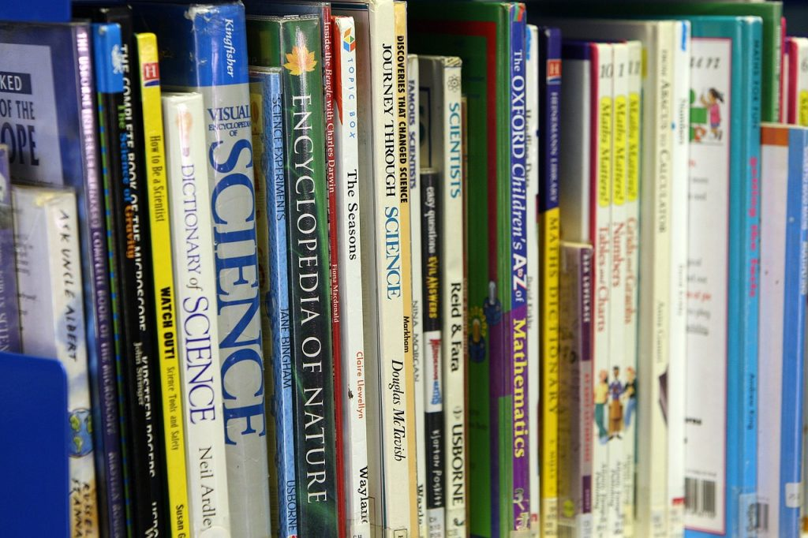

အောက်ပါနည်းလမ်းများနဲ့ ကလေးတစ်ယောက်ရဲ့ စာဖတ်ချင်စိတ်ကို အဆင့်ဆင့် ပြုစုပျိုးထောင် ပေးနိုင်ပါတယ်။
(၁) ကလေးငယ်ငယ် ကတဲကစပြီး သူ့ကို စာဖတ်ပြပါ
လူတော်တော်များများဟာ ငယ်ငယ်တုန်းက သူတို့မိဘတွေ သူတို့ကို ယုယုယယ ထွေးပွေ့ပြီး စာဖတ်ပြခဲ့တာကို အသက်ကြီးသည်အထိ မှတ်မိနေကြပါတယ်။ သင့်ကလေးကို ငယ်ရွယ်တုန်းမှာ စာဖတ်ပြတာဟာ သူ့ကို သင်ဘယ်လောက် ချစ်လဲဆိုတာ ကလေးရဲ့ နှလုံးသားထဲ စွဲသွားပြီး တစ်သက်လုံး အမှတ်ရနေစေမှာပါ။ ကလေးကို စာဖတ်ပြခြင်းဖြင့် စာအုပ်တစ်အုပ်ကို ဘယ်လိုကိုင်တွယ်ဖတ်ရှုရမလဲ၊ စာမျက်နှာတွေကို ဘယ်လိုလှန်ရမလဲ ဆိုတာတွေကို ကလေးကို သင်ကြားပေးသလို၊ စာလုံးတွေဟာ စကားလုံးတွေနဲ့ အဓါပ္ပါယ်တွေကို သယ်ဆောင်ထားတယ် ဆိုတဲ့ အမြင်ကိုလဲ ရရှိစေမှာ ဖြစ်ပါတယ်။ ကလေးကို စာဖတ်ပြတဲ့အခါ အသံနေ အသံထားနဲ့ စိတ်ဝင်စားဖွယ်ဖြစ်အောင် ဖတ်ပြပါ။ ဒီလို အသံနေ အသံထားနဲ့ ဖတ်ပြတာဟာ ကလေးကို စာအုပ်နဲ့ ဇာတ်လမ်း အပေါ်မှာ ပိုပြီး စိတ်ဝင်စားစေပါတယ်။ ကလေးကို စာဖတ်ပြနေရင်းနဲ့ စကားလုံးလေးတွေ (ကကြီး၊ ခခွေး၊ A B C) ကို ထောက်ပြပြီး အသံထွက်တွေ သင်ပေးပါ။ နောက်နဲနဲ့ စာဖတ်ရင့်လာရင် သူတို့ကို ထောက်ပြပြီး ဒါဘာလဲလို့ မေးပါ။ ကလေးက တဖြည်းဖြည်း စာလုံးတွေနဲ့ အသံထွက်တွေကို မှတ်မိလာပါလိမ့်မယ်။(၂) ကလေးတွေ လက်လှမ်းမီတဲ့ နေရာမှာ ကလေးစာအုပ်တွေ များများ ထားပေးပါ
စာအုပ်တွေကြားမှာ နေရတဲ့ ကလေးတွေဟာ စာအုပ်တွေကို သူငယ်ချင်းလို ချစ်မြတ်နိုးတတ်ကြပါတယ်။ ဒီကလေးတွေဟာ စာဖတ်ဖို့၊ စာအုပ်တွေကတဆင့် ဗဟုသုတ ရှာမှီးဖို့ ဝါသနာ ပါကြပါတယ်။ ဒါ့ကြောင့် အိမ်မှာ ကလေးစာအုပ်ကောင်းလေးတွေကို ကလေးအလွယ်တကူ လက်လှမ်းမှီနိုင်တဲ့ နေရာတွေမှာ ထားပေးပါ။(၃) သင်ကိုယ်တိုင်က နမူနာဖြစ်အောင် စာဖတ်ပြပါ
သင်က ကလေးရှေ့မှာ တချိန်လုံး ဖုန်းပွတ်နေရင် ကလေးကလဲ စာမဖတ်ပဲ ဖုန်းချည်း ထိုင်ပွတ်နေပါလိမ့်မယ်။ သင်က တီဗီရှေ့ကနေ မခွာတမ်း ထိုင်နေရင် ကလေးကလဲ တီဗီပဲ ကြည့်ချင်ပါလိမ့်မယ်။ ဒီတော့ ကလေးကို စာဖတ်တာ ဝါသနာ ပါစေချင်တယ်ဆိုရင် သင်ကိုယ်၌ကလဲ ကလေးရှေ့မှာ နမူနာဖြစ်အောင် စာဖတ်ပြပါ။(၄) ကလေးတွေ စာဖတ်အား ကောင်းလာရင် သူတို့ရဲ့ အသက်အရွယ်နဲ့ လိုက်တဲ့ စာအုပ်တွေ၊ သူတို့ဝါသနာပါတဲ့ ဘာသာရပ်နဲ့ ဆိုင်တဲ့ စာအုပ်တွေ ရှာဖွေပေးပါ
ကလေးကို ဖတ်ဖို့ ရွေးချယ်ပေးတဲ့ စာအုပ်တွေဟာ သူ့စာဖတ်နိုင်တဲ့အား၊ သူ့အသက်အရွယ်နဲ့ လိုက်လျှောညီထွေတဲ့ စာအုပ်တွေ ဖြစ်ဖို့လိုပါတယ်။ ပြီးတော့ သူဝါသနာပါတဲ့ ဘာသာရပ်နဲ့ ဆိုင်တဲ့ စာအုပ်လေးတွေလဲ ရွေးချယ်ပေးနိုင်ရင် ကလေးက ပိုပြီး စာဖတ်အား ကောင်းလာမှာပါ။ သိပ္ပံ ဝါသနာပါတဲ့ ကလေးကို သိပ္ပံပညာရပ်ဆိုင်ရာ စာအုပ်တွေ ရှာဖွေပေးတာမျိုး၊ ပန်းချီဆွဲတာ ဝါသနာ ပါတဲ့ ကလေးကို ပန်းချီအနုပညာနဲ့ ဆိုင်တဲ့ စာအုပ်လေးတွေ ရှာပေးတာမျိုးပေါ့။ ကလေးက စာအုပ်တွေဟာ သူတို့သိချင်တာတွေကို ပြောပြနိုင်တယ်ဆိုတာ သိရင် စာဖတ်တာ ပို ဝါသနာ ပါလာပါလိမ့်မယ်။
(၅) သူတို့ဖတ်ခြင်တဲ့ စာအုပ်တွေကို သူတို့ဖာသာ ရှာဖွေနိုင်အောင် အားပေးကူညီပေးပါ
ကလေးနဲနဲ အသက်ရလာတဲ့ အခါ ကိုယ်ကသူတို့ဖတ်စေချင်တာကို ရွေးချယ်ပေးတာထက် သူတို့ကို သူတို့ဖတ်ချင်တဲ့ စာအုပ်လေးတွေ ကိုယ်တိုင်ရှာဖွေနိုင်အောင် အားပေးကူညီပေးပါ။ နောက်တခါ စာအုပ်ဆိုင်သွားရင် သူတို့ကိုပါ ခေါ်သွားပြီး အတူတူ စာအုပ်တွေ ရှာဖွေနိုင်ပါတယ်။ ဒါမှာမဟုတ်လဲ အခုခေတ် အင်တာနက်က စာအုပ်ရောင်းတဲ့ ဆိုင်တွေက ဓါတ်ပုံတွေပြပြီး သူတို့ကို သူတို့ဖတ်ချင်တာတွေ ရွေးချယ်ဖို့ ကိုယ်က ကူညီပေးနိုင်ပါတယ်။(၆) စာကြည့်တိုက်မှာ အသင်းဝင်ပေးပါ
ကိုယ့်ရပ်ကွက်ထဲမှာ ဒါမှာမဟုတ် အနီးအနားမှာ စာဖတ်အသင်းတွေ၊ စာကြည့်တိုက်တွေ ရှိရင် ကလေးကို အသင်းဝင်ပေးပါ။ နယ်မြို့တွေမှာဆိုရင် အစိုးရ ပြန်/ဆက် စာကြည့်တိုက်တွေရှိရင် အသင်းဝင်ပေးပါ။ ဒီစာကြည့်တိုက်လေးတွေမှာလဲ ကလေးစာအုပ်ကောင်းလေးတွေ ရှိတတ်ပါတယ်။(၇) ကလေးက စာဖတ်ရင် သူတို့ကို ဆုချပါ
လုံဝစာဖတ်ရမှာ ပျင်းတဲ့ ကလေးမျိုးဆို ဒီနည်းကို သုံးနိုင်ပါတယ်။ ဥပမာ စာအုပ် တစ်အုပ် ပြီးအောင် ဖတ်နိုင်ရင် တီဗီပေးကြည့်တာမျိုးပေါ့။ကလေးတစ်ယောက်ရဲ့ ဉာဏ်ရည်ဖွံ့ဖြိုးမှုဟာ စာဖတ်တာနဲ့ အများကြီး သက်ဆိုင်ပါတယ်။ စာဖတ်တဲ့ ကလေးဟာ ကျောင်းစာမှာလဲ ထူးချွန်တတ်ကြပါတယ်။ သင့်ကလေးကို ကျောင်းစာ ထူးချွန်ပြီး ဉာဏ်ရည်ထက်မျက်တဲ့ ကလေးတွေဖြစ်စေခြင်ရင် ငယ်ငယ်ကတဲက စာဖတ်ဝါသနာပါအောင် လေ့ကျင့်ပေးပါ။